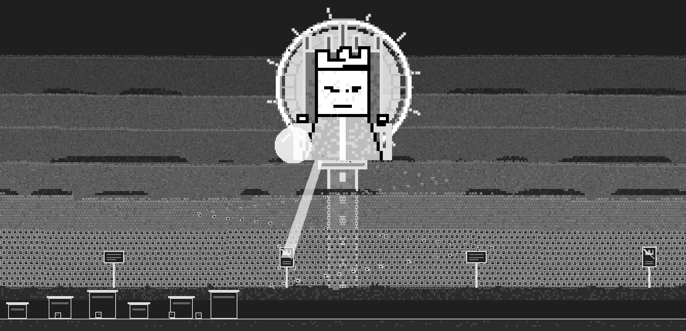
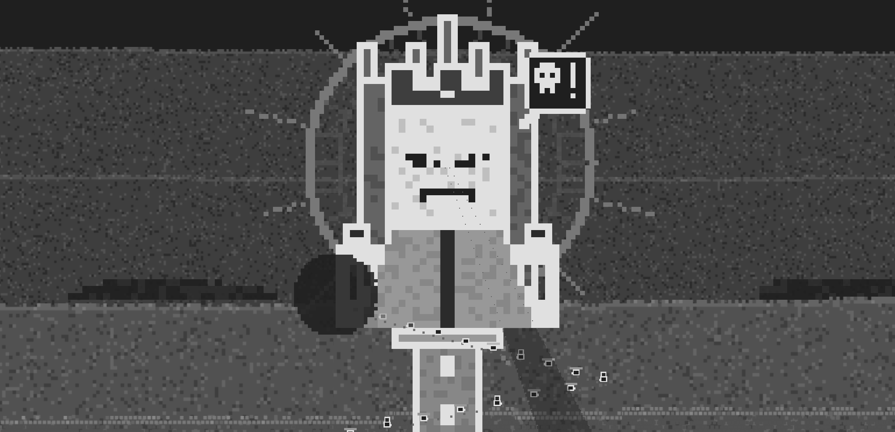
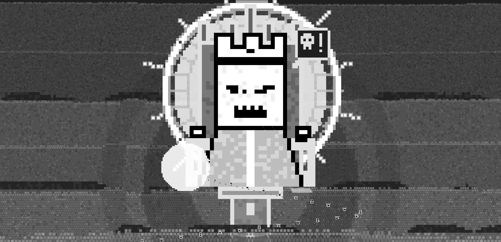
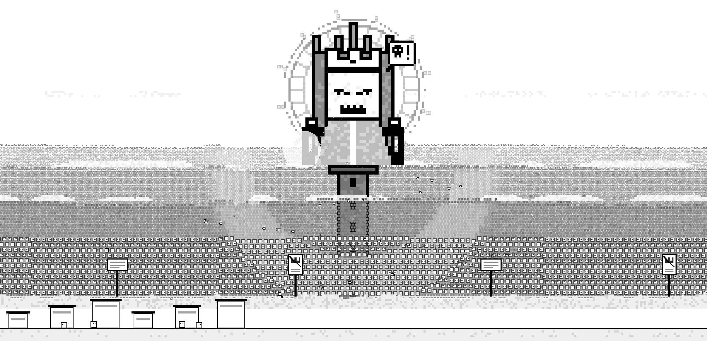
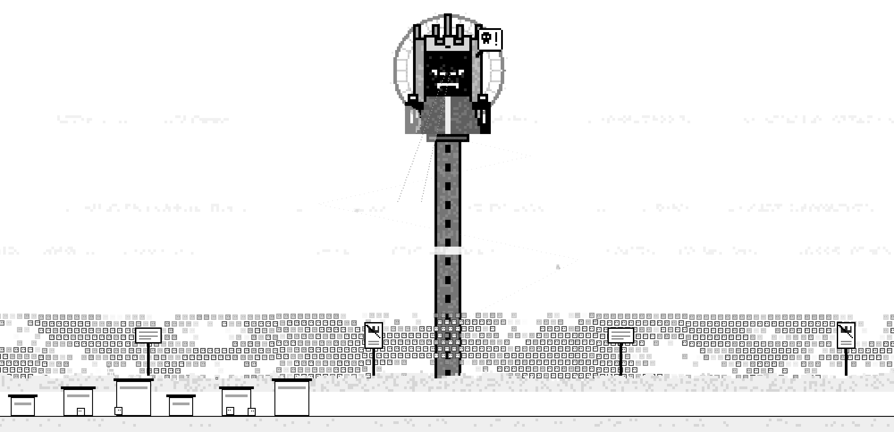
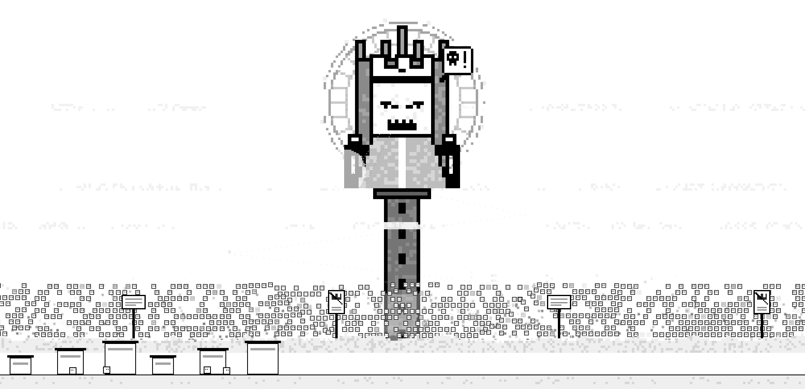
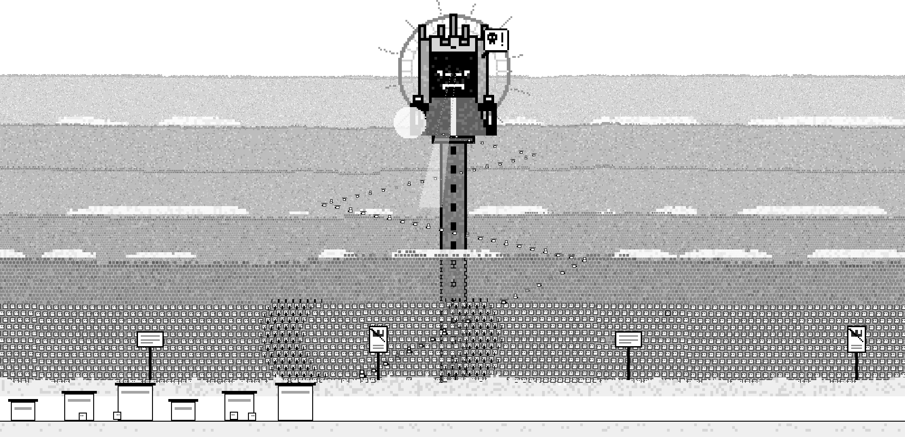
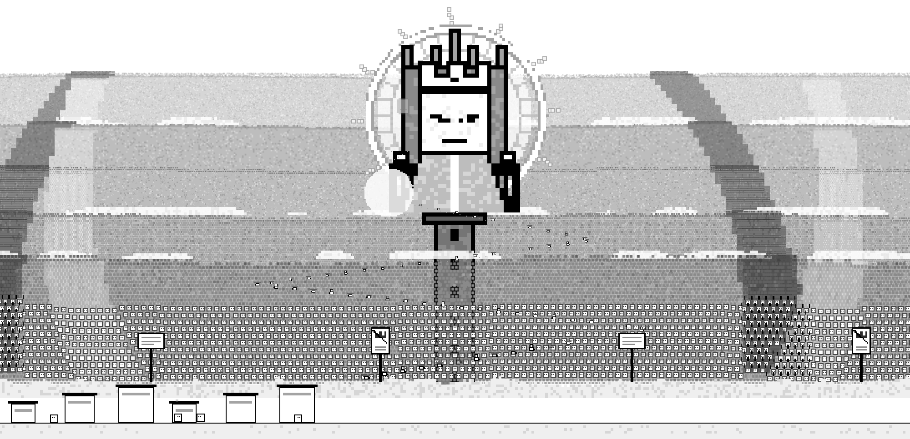
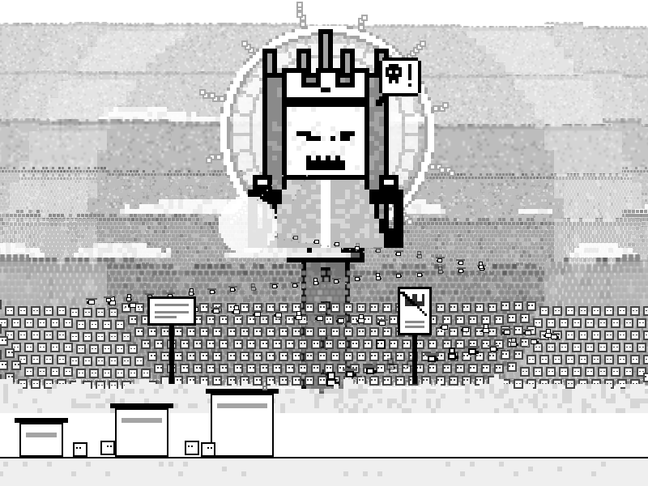

Act 3: God's crowd fills the sky (round 2)
This is a mock drawn from plain shapes in a canvas. It is not the game: there is no sim and no game renderer. It uses the game's grid (P = 6, a body is 3 cells), its eleven greys and the dark page's lightness map, at the game's zoom 1. Every name on this page in dotted underline is a placeholder word, and so are God, the throne, the signs, the posters and every symbol in a bubble.
This draws the owner's decisions as they were given. The crowd fills the whole sky and ours behind the camp is dropped. The crowd's life is rolling waves plus rallies. God sits high in the center on a tower throne, with a halo, rays and a searchlight gaze. There is a symbol sermon and a burning speech with a gaze warning, and a tithe line climbing to the glare. Small souls drift up. Panning right zooms in on God. The mock decides nothing beyond those.
2000 by 967, zoom 1
Round 2: what changed (the owner's four answers)
- 1. God is always a light source. God himself, his glare, the halo, the rays, the gaze and the glare that takes the tithe are drawn in raw tones, outside the lightness map (the game's
raw, src/ink.js, the way hell's heat and the deep's lit things are handled). On both pages they lighten whatever they cross. On the dark page raw white is brighter than the page's own ink (#e0e0e0), so God and his glare are the brightest things in the sky, and the cone lifts the crowd toward light. God is now a white square with an ink edge, black slit eyes with a white pinpoint pupil, and a toothed mouth when he roars. The menace is his shape and his look, not darkness. A new disc of glare behind the throne lifts the far crowd round him. The halo is a white band with a grey edge either side, so it still reads against paper. Only the throne's back and the tower, which are stone, still take the map. - 2. The crowd thins and shrinks. Every soul and every far cell now has its own threshold: three parts chance, one part row, so the back rows go first. Past its threshold it fades out, so a band empties by scattered souls dropping out and never by whole columns. Each band's top also sinks by half its height as it goes, so the crowd gets visibly smaller and lower. A far band is now a small canvas of its cells, drawn up to size, and its cells' opacities are rewritten only when support moves.
- 3. Roars and rallies are bigger and travel through the whole crowd. A ring now runs out to beyond the frame (rally 320 px/s, roar 380 px/s), across every band from near to far. In each band the ring's width and jump are scaled by that band's parallax rate: about 33 px wide and 6 px of jump in the back band, 70 px and 12 px in the near one. Inside a rally's ring the crowd jumps up and inks (the near souls raise both arms). Inside a roar's ring it ducks and pales (the near souls drop and shut their eyes). Grumbles stay small and harmless.
- 4. God is bigger. A God-cell is now 6 px in the 800 by 600 window (was 3) and 9 px in the 2000-wide one (was 6). The square is 108 px and 162 px across, the throne 192 px and 288 px. He sits a little lower so his halo and rays fit. The zoom at the right end is 1.8x (was 2.6x), since he is already large. The tithe line's zigzag now climbs below him, not across him, to the glare at his left hand.
Before and after












How each piece reads
- The crowd fills the sky. There are seven parallax bands, from the cloud floor up to near the top of the sky. The five far bands are grey cells: 2, 2 and 3 px cells, then staggered 3 and 4 px heads. The top band is palest and each band below it is a step darker. Each band's top two rows are a step darker again, so its lumpy edge reads against the band behind. Band 6 is staggered 6 px heads. The nearest band, just above the cloud floor, is 12 px souls, each with an ink rim, two eyes looking toward God, and its own paper tone. The bands pan at 0.24 to 0.80 of the camp's rate.
- Thin clouds drift between bands 2 and 3, 4 and 5, and 5 and 6: broken billows of near-white cells on their own clocks.
- Thinning and shrinking. Band k starts to go at 12% + 11% × k of support and is gone 30% later; the near band keeps a scatter. Souls drop out one by one, the back rows first, fading as they go, and each band's top sinks as it empties. At 100% a thin, low scatter of the near band is all that is left.
- Joining. About once a second and a half, a near soul's rim goes black, holds half a second, and the soul fades out; the members count goes up. (In the mock it fades back in fourteen seconds later.)
- A, the sea. A long wave rolls through every band at once, heads rising and falling a cell at a time in held steps. The near souls also sway a cell across.
- C, a rally. Every six to nine seconds a sign or poster lifts a cell. A ring runs out from it through the whole crowd and on past the frame. Inside the ring heads jump up and ink, and the near souls raise both arms.
- God sits high in the center, in front of the five far bands and behind the two near ones. He is a white square with an ink edge, lit from within. He has black slit eyes slanted into a scowl, each with a white pinpoint pupil, and a white crown in an ink outline. Below the square is a pale robe with a white seam, and his hands rest on the throne's arms. Behind him is a mid-grey spiked throne back, on a tall, narrow, slit-windowed stone tower. His idle loop is in held poses. He breathes, and his pupils follow the gaze; the eyes narrow to one row while the gaze lingers on the camp. His right hand's fingers drum. Every eleven seconds the crown slips a step, and the left hand comes up in two poses to straighten it.
- The glare and the halo. A white disc of glare sits behind the throne and lightens the far crowd round him. Outside it is the halo: a white band with grey edges, an inner ring and radial marks between them, so it reads faintly as an iris. Twelve spokes orbit the halo. They shorten and fade as support rises and are gone at 100%; the glare dims a little.
- The gaze. Two dotted grey edges and a white wedge of light run from below his chin onto the crowd, lighting what they cross on both pages. The gaze sweeps right, center and left, then holds 2.6 s on the camp, whose bodies look up.
- The sermon. About every six and a half seconds God roars a symbol bubble ("!!", "?!", "#!", a skull and "!", a bolt) and bares his teeth. The roar's ring runs out from the throne through every band, and heads duck and pale as it passes. Small grey grumble bubbles ("~", "...") send a short, harmless ring.
- The burning speech runs on "speech now" and every thirty seconds. The gaze swings onto a sign both windows can see and settles there. Four ink corner marks close in on the sign in three held steps (about 2 s). Then God roars a bolt, and the sign chars to ink cell by cell, burns away with embers rising, and is gone. (In the mock it fades back thirteen seconds later.)
- The tithe line is seventy bowed carriers with planks or sheets. They leave the camp, cross the cloud floor and zigzag up a dotted ledge, below God, to a white glare at his left hand that takes the load and then the carrier. They shrink with depth, and their parallax eases from the camp's rate to God's. As support rises the line thins, slows and fades its ledge; at 100% the few left stand still.
- Small souls drift up from the camp every few seconds. There are no spires and no dashed horizon line.
- The camera. Every layer pans at its own rate. Panning right zooms about God's face up to 1.8x and pulls his face to the middle of the frame.
Self-critique after round 2
- Exciting? Yes, more: a rally's ring now climbs the whole sky, and a roar's runs past the frame. But the rings' edges are 12 px steps, and where a ring's side runs straight up and down it reads briefly as a pale or dark slab. A finer step would cost more slices a frame.
- Readable? God is now the focal point in both windows. In light mode a white God reads by his ink edge against the grey throne. It is less "dark lord" than before; the scowl and the teeth carry the menace, and the owner should judge whether that is enough.
- The light reads on both pages. In light mode, white light on a pale sky shows only where it crosses the crowd, so the gaze is faint over the empty sky at 90%. On the dark page it is unmistakable.
- Thinning by souls reads as people leaving. At 50% the far bands are speckled and lower rather than broken. Because each band sinks as it thins, the top of the sky clears first, which also leaves God more alone as the strike nears.
- Char is raw black too. A burning sign's char is soot on both pages; mapped, it went pale on the dark page and read as glowing, not burnt.
- Cost while support moves. A band whose share is changing rewrites its cell canvas every frame (a few ms each in the headless shell). A still slider costs only the blits.
Round 1 page: harsh self-critique, pass 1 (the first build's shots)
- Readable? No: the clouds read as a dashed horizon line, which the owner ruled out. They were thin white dashes in rows, three of them across the sky. Fix: broken billows one to three cells tall, with lumpy tops.
- Readable? No: the sky was one grey felt. The band edges did not show, so it read as static rather than as layers. Fix: a pale-to-dark ramp from the top band down, a darker top row of heads on every band, and less speckle (a step either side on 1 cell in 6, not 1 in 3).
- The back band was already gone at 10%. Thinning started at 0. Fix: the back band starts at 12% of support, so 10% is a full sky.
- God was a black blob on a black throne, with eyes that read as four white dots. Fix: the throne's back is now mid grey, so the square stands off it. The eyes are slanted almonds, one pupil each, and they scowl. The robe is mid grey with a seam, so the square still reads as a square.
- God was off the top of the frame, with the spikes cut off. Fix: he sits lower.
- The halo was hidden behind the throne, because its ring was smaller than the throne's back. Fix: a ring of 20 God-cells.
- Exciting? The burning sign was invisible. A 42 px sign charring on a 2000-wide frame went unseen, and so did the warning frame (2 px of grey). Fix: signs at 60 by 36 and posters at 42 by 60. The warning is now four ink corner marks that close in in held steps, the way a target is marked without a flash.
- The gaze painted a stripe down God's own robe. Fix: the light pool starts below the seat, and only its dotted edges run up to the eyes.
Round 1 page: harsh self-critique, pass 2 (the four questions the owner then answered; see "Round 2" above)
- Exciting? The roar, the big beat, is a one-cell duck. In the near band it reads: the souls drop and shut their eyes. In the far bands it is a faint ridge on a 2000-wide frame. The rally is the same: two clear arcs of raised arms in the near band, and little above it. Both rings may want a tone step on the far bands as they pass, flat and held. That is not drawn here.
- Readable at 800 by 600? Busy in the middle. God, the halo, the gaze, the tithe zigzag and two signs share about 460 px of sky, and the zigzag crosses the tower. At 2000 by 967 it has room. The small window may want two zigzags, not three.
- The holes read as pillars. A band thins by whole columns, so at 50% the far bands show vertical stripes and gaps. That reads more as a broken wall than as a thinning crowd. Holes by patch rather than by column would look more like people leaving.
- Thinning reads, but not as walking out. 90% plainly looks emptier than 10%, but nothing goes toward the camp: a soul fades where it stands. That is what was decided ("fades out and counts as a member"), but the camp never visibly gains, and the counter is the only reward.
- Dark mode inverts the mood. Under the lightness map God's near-black becomes near-white, so in dark mode he is a pale square. The searchlight's paper becomes the dark grey, so it is a cone of shadow, and the glare is a dark disc. The dotted edges keep the gaze readable, but "Sauron" reads only in light mode. If he must be dark in both modes, he needs an exception to the map.
- On an empty sky the gaze vanishes. At 90% the pale wedge lies on paper and only the dots show. That may be right, since nothing is left to light, but it means the gaze fades out with the crowd.
- God at zoom 1 is small for "giant". The square is 108 px in the 2000-wide window and 54 px in 800 by 600, three bodies across in the small one. The tower and halo give him size, but the face reads as menacing only at the zoomed right end or in the 3x crop.
- Off the P = 6 grid. These are all finer than P = 6: the far bands' cells (2 to 5 px), the halo, rays and iris marks (2 or 4 px), the spike on God's center line, and God's own cells in the small window (3 px). It is deliberate, for distance, but it breaks the house grid, and the owner should accept or refuse it.
What the mock cannot show
- The frame cost in the real renderer. The number under each canvas is this page's own draw time. In a headless shell, round 2 drew about 5 to 7 ms a frame for the 2000-wide canvas and about 3 ms for 800 by 600 with the slider still. A band whose share of support is moving rewrites its cell canvas, and those frames rose to about 19 ms. The five far bands are cached bitmaps, drawn as column slices, and the near souls, the cloud floor and the carriers are a few thousand rects. The game draws through its own layers, ink map and camera, beside the camp and its sim. Nobody has measured this in the game. The full-sky crowd is several times the area of the current mass, so expect it to cost more than today's three bands.
- The sim. The thinning here is a noise field shaped by the slider, not a count of souls. A join is a random near soul on a timer, and it fades back after fourteen seconds so the mock does not run out. A burnt sign fades back too. In the game, neither would return.
- How the camp and the stations look today. The camp here is a few placeholder boxes and four bodies.
- What the player does when zoomed in on God, and how the real camera pans: by drag, wheel or key, and how it comes back.
- Sound, weather, smog, and the act's other cutscenes.
- Whether the symbol bubbles are readable as anger without any words, to a new player.
- Every sign, poster, glyph and the God figure itself are placeholders, each still waiting on its own mock.